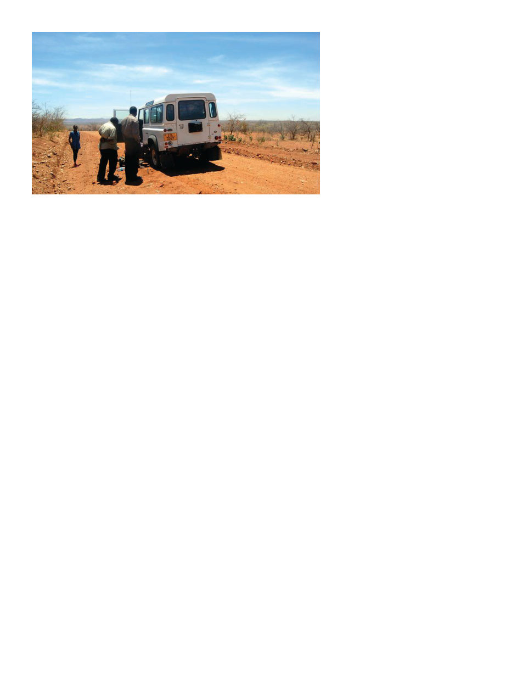

American Bee Journal
98
gos. I was in for a surprise on arrival
— I had assumed he was some kind
of government regional development
official, he is so humble and unassum-
ing. It wasn’t until he was greeted by
two platoons of soldiers saluting at
attention that I began to wonder who
exactly he was. It was only then that
I discovered I’d been corresponding
with the governor of Singida region,
population 1.3 million!
Dr. Kone directed some local gov-
ernment officials (a mayor he had just
appointed) to give me a ride from
there to the nearest bush school to
the Hadzabe, and finally we hiked
several hours to reach the Hadzabe
village of Kipamba. Altogether it took
more than a week to get from Nairobi
to Kipamba.
Kipamba village didn’t resemble
the tight clusters of habitations I’d
seen elsewhere in Africa, but was
perhaps positively urban by Hadzabe
standards. Family dwellings had been
constructed each a few hundred yards
apart, out of sight among the thorn
trees and acacias. Each family had a
rudimentary brick shed-like struc-
ture I think they’d been persuaded to
build as an “improvement,” and sev-
eral grass wigwam-like huts they pre-
ferred. (I would agree, they had much
better airflow, the brick sheds were
dark and sweltering.) Only a few hun-
dred Hadzabe live in Kipamba out of
a population of a few thousand, many
of whom are still entirely nomadic.
We always try to get women in-
volved in beekeeping projects but it
was a bit of a surprise to me when I
got my trainees assembled and it was
all women. Apparently the men were
all out hunting with their bows and
arrows. Another interesting cultural
note: They were the first and only
people I’ve met who readily eat bee
larvae. I explained crucial rudiments
of beekeeping and we prepared for
our first hands-on beekeeping!
The beehives they had were all
hung up high in acacia trees, ten to
fifteen to a tree. Because they were
in amongst the village, such as it is,
we prepared to do our beekeeping
an hour before sunset to minimize
disturbance in the village. Previously
they had absolutely no protective gear
and any harvesting they did must
have been a pretty much smash-and-
grab affair at night.
Pierce Manufacturing (you might
recognize the name, as they’re a pre-
eminent maker of hot-knives) had
generously gifted ten brand new
still-in-the-packaging bee suits to this
project, which made a crucial differ-
ence, allowing ten trainees at a time to
participate in hands-on activities, and
will certainly make a solid impact on
the Hadzabe’s ability to do beekeep-
ing in the future.
Climbing up the trees to get the
hives down inevitably resulted in the
bees being thoroughly stirred up by
the time they reached the ground.
Two immediate recommendations
were to place hives on platforms near
the ground (though honey badgers
admittedly can be a huge pest in Tan-
zania), and/or to at least spread the
hives out more like one-a-tree — there
are more than enough trees and that
should increase the odds of swarms
inhabiting empty hives (nearly all
beekeeping I’ve seen in Africa de-
pends on swarms moving into hives
to increase numbers), and prevents
one angry hive from upsetting the
others.
The hives themselves were con-
structed like a caricature of a hive,
by someone who perhaps only had a
quick glance at one before being set
to making them. The frames inside
were double-wide and only half as
tall as the box. As such, you won’t
be surprised to learn the comb inside
pretty much ignored the frames as
guides and it was impossible to do
any frame manipulation. This unfor-
tunately made a lot of hands-on train-
ing I’d have liked to have done very
difficult. I did my best to explain the
changes to the hive design that were
necessary, though the hives were con-
structed far away in Singida town so I
knew they would probably have little
ability to influence changes. I had
hoped to meet the carpenters but in
the end wasn’t able to, but I explained
the problem to Dr. Kone when I saw
him after, and followed up by email-
ing hive specifications to him.
A small number of people have
questioned the moral advisability of
potentially changing the Hadzabe’s
unique culture, but hunter-gathering
results in no income to spend on
education for their children or nec-
essary medical treatment. On top of
this, having already been pushed into
lesser productive land, what they’ve
done for the past 10,000 years may no
longer be adequate to support them.
The best we can do is help them gain
a foothold in sustainable crafts such
as beekeeping. I greatly admire their
self-sufficiency and ancient culture,
but to refuse to teach them new skills
because of this I think would be a pa-
tronizing and morally unsupportable
position.
While in the village, Neema and I
stayed in the small shell of a house
that had recently been constructed for
a potential future doctor. We slept on
the mattresses we’d carried in with
us, and had also brought a week’s
worth of food — mainly spaghetti
and beans (because there’d be no re-
frigeration and modern dehydrated
hiking food wasn’t exactly available).
We very soon got tired of this mo-
notonous fare, but the Hadzabe were
happy to combine ours with theirs,
so I got to eat a variety of unidenti-
fied small animals and they enjoyed
the beans and pasta. Some of their
foods such as baobab porridge were
quite nice in fact. In the evenings
Neema and I would usually sit with
the chief’s large family as they roasted
dinner over a camp fire under the in-
finite stars. Looking around, the sur-
rounding hills were dotted with other
families’ fires, and not a street lamp or
flicker of a TV was visible anywhere.
A flat tire in the middle of nowhere is a mandatory part of the adventure.